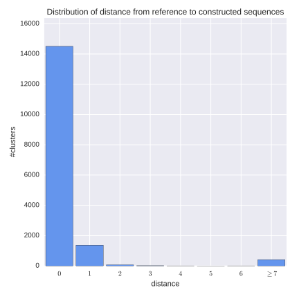
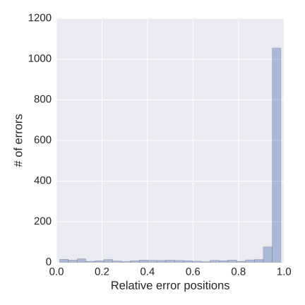

Motivation and purposes
Construction of antibody repertoire is a preliminary step of any immunological analysis based on Rep-seq reads. During several last years at least three tools (IgRepertoireConstructor by Safonova et al (2015), MiXCR by Bolotin et al. (2015) and pRESTO by Vander Heiden et al. (2014)) were released for this problem. Thus, the problem is widely addressed. However, it cannot be said that it is completely solved due to the following reason: there is no conventional quality assessment methodology for adaptive immune repertoire construction. Without such methodology we cannot compare tools and determine their limitations.
In order to fill this gap, we developed IgQUAST (ImmunoGlobulin QUality ASsesstment Tool), a tool for benchmarking of full-length adaptive immune repertoire construction tools and quality assessment of adaptive immune repertoires.
IgQUAST has the following purposes:
- Reference-based and reference-free repertoire quality assessment;
- Overcorrection/undercorrection detection;
- Analysis of antibody abundances;
- Detection of sequencing technology and repertoire construction strategy artifacts
Quality assessment scenarios
IgQUAST takes as an input:
- Initial Rep-seq read library;
- Analyzed adaptive immune repertoire constructed on this library;
- For reference-based analysis, the reference repertoire constructed on the same library.
- During reference-based analysis the tool compares two input repertoires, the reference repertoire and the constructed repertoire.
This analysis is separated into two scenarios:
- Repertoire-to-repertoire matching works with repertoire sequences only. It aligns each from two input repertoires against another one and computes metrics like sensitivity and precision, detects error positions in erroneously constructed sequences, and compare reference and constructed abundances for ideally reconstructed sequences.
- Partition-based analysis works with initial reads partitions (RCMs, read-to-cluster maps) only. It compares two partitions and computes partition similarity metrics (like Rand index). Also it computes cluster quality measures (like purity and discordance) and plots their distributions for both input repertoires.
- Reference-free analysis is performed to the constructed repertoire. The tool detects overestimated clusters in the repertoire using amplification-free Poisson model. Also it estimates error rate and error profile of the initial read library. In case of the reference repertoire is provided, the same analysis is performed for it. All reference-free analysis presented in the corresponding scenario requiring both repertoire sequences and read-to-cluster map (RCM).
As an output IgQUAST reports a bunch of plots along with numerical statistics. Brief report is outputted to screen and saved to text file. All computed metrics along with additional information (e.g. data to reproduce plots) are exported to JSON. Table below summarizes scenarios requirements and results.
| Scenario | Requirements | Resultant output |
| Repertoire-to-repertoire matching | Constructed and reference repertoires in CLUSTER.FA format |
Plots:
|
| Partition-based analysis | Initial input Rep-seq library, RCM files for the reference and the constructed repertoires |
Plots:
|
| Reference-free analysis for constructed repertoire | Initial input Rep-seq library, constructed repertoire RCM file |
Plots:
|
Some scenarios are disabled by default since they are time- and memory-consuming. See IgQUAST manual for options description.
Reference repertoire
To obtain reference repertoire we have two options: simulate the repertoire or construct the repertoire using barcoded data and run repertoire construction in the blind (ignoring barcodes) mode.
Simulation
There are no special requirements for simulation software or/and simulated repertoire, but we suggest to use our IgSimulator tool, that was specially designed for benchmarking adaptive immune repertoire construction strategies.
Molecular barcoding
Molecular identifiers (UMIs) or barcodes can be used for B-cell labeling. Such labeling allows one to reconstruct adaptive immune sequences using consensus by groups and, thus, provides one with a reference dataset for benchmarking.
Please note that currently available barcoding techniques are not perfect. Thus, using naive barcode demultiplexing approach may lead to imprecise reference and biased analysis. The better option is to use a special tool designed for barcode-assisted antibody repertoire construction. We suggest to use our BarIgReC tool for this.
Another approach to deal with barcoding artifacts is to consider specially designed semi-artificial test datasets. Such datasets could be obtained by aggressive input read and barcode filtering, when all suspicious barcodes and all suspicious reads are omitted. Such approach is definitely improper for real-life repertoire construction (since it misses a significant part of repertoire diversity, i.e., it is biased), but it is appropriate for test dataset preparation.
Cluster abundance threshold
Distribution of antibody abundances is usually highly uneven. Most clusters in a repertoire have small size. Note that consensus computed by a small cluster is unreliable. we just cannot unambiguously construct a consensus by two reads in non-trivial case. And due to non-independence of amplification errors and/or special sequencing errors pattern even larger cluster may be unreliable too.
Thus, we have to exclude small clusters from the analysis in order to make results more stable and interpretable. The threshold for reference cluster size (reference min-size) is a parameter of benchmarking procedure. IgQUAST uses 5 as a default value. See the paper for more information about this choice.
At the same time, during real-life repertoire construction one have to choose a threshold for constructed cluster size. Constructed cluster size threshold (constructed min-size) is a parameter of repertoire construction procedure. The selection is tricky since the larger threshold, the less detailed but more precise result. One have to find the optimal (in some sense) threshold value, the concrete optimality criterion depends mostly on the final purpose of the research.
For different repertoire construction strategies optimal (in any sense) threshold values can be different. Due to this reason, IgQUAST computes statistics for various threshold values.
Repertoire-to-repertoire matching
For each reference repertoire sequence IgQUAST finds the closest sequence in the constructed repertoire and vice versa. This allows us to compare repertoires in terms of their sequences.
Constructed-to-reference and reference-to-constructed distance distributions
For each sequence in the constructed repertoire IgQUAST finds the closest sequence in the reference repertoire and plots histogram of the distances. Also IgQUAST plots the same histogram mapping the reference repertoire to the constructed one. Thus, we obtain two kinds of plots: constructed-to-reference and reference-to-constructed errors distribution.
IgQUAST constructs these plots for different constructed min-size values (1, 3, 5, 10) and for fixed reference min-size (5 by default).
|  |

|
| Reference-to-constructed distance distribution, reference min-size = constructed min-size = 5 | Reference-to-constructed (sensitivity) and constructed-to-reference (precision) distance distributions for reference min-size = 5 and various constructed min-sizes |
These plots show how close input repertoires are. It is necessary to inspect plots for different min-size values, since small clusters are probably imperfect and should be excluded from the analysis.
Plots above show that we have about 10% repertoire sequences with only one error. Further we will investigate them in detail.
Error position distribution
For "almost correct" (matched with only one error, i.e. corresponded to the second blue bar in the left figure above) constructed clusters IgQUAST plots error-position distribution (error profile).
Such analysis can reveal sequencing technology or repertoire construction strategy artifacts.
|  |
| TODO add caption |
Sensitivity and precision
IgQUAST computes clusters in the reference repertoire that were ideally recovered in the constructed repertoire. As integral measures of quality IgQUAST reports two following metrics:- Precision The larger precision, the less number of false constructed clusters
- Sensitivity The larger sensitivity, the more correct clusters were reconstructed

|

|
Cluster abundances estimation
Repertoire clusters are also characterized by their abundances. For clusters presented in both repertoires (so-called ideal clusters), IgQUAST compares abundances. Error correction does not fix ALL errors, therefore typically cluster sizes are underestimated. I.e., we can expect that the cluster abundance in the constructed repertoire is less than abundance in the reference repertoire. Otherwise, if the constructed abundance is much more than the reference abundance (we say, "the abundance is overestimated"), we suppose that the correspondent cluster is overcorrected, i.e. erroneously glued with the other (probably smaller) cluster. In the plot potentially overcorrected clusters are shown by red points, while other cluster are shown by blue ones.

|

|
Partition-based analysis
Cluster purity and metrics

|
|
|
Reference-free analysis
Reference-free detection of over/undercorrected clusters
To detect overcorrection construct consensus and count errors by positionFeedback and bug reports
Your comments, bug reports, and suggestions are very welcome. They will help us to further improve IgQUAST.If you have any trouble running IgQUAST, please provide us the log file from the output directory.
Address for communications: igtools_support@googlegroups.com.
Manuals
Citations
Alexander Shlemov, Sergey Bankevich, Andrey Bzikadze, Dmitriy M. Chudakov, Yana Safonova, and Pavel A. Pevzner. Reconstructing antibody repertoires from error-prone immunosequencing datasets (submitted)